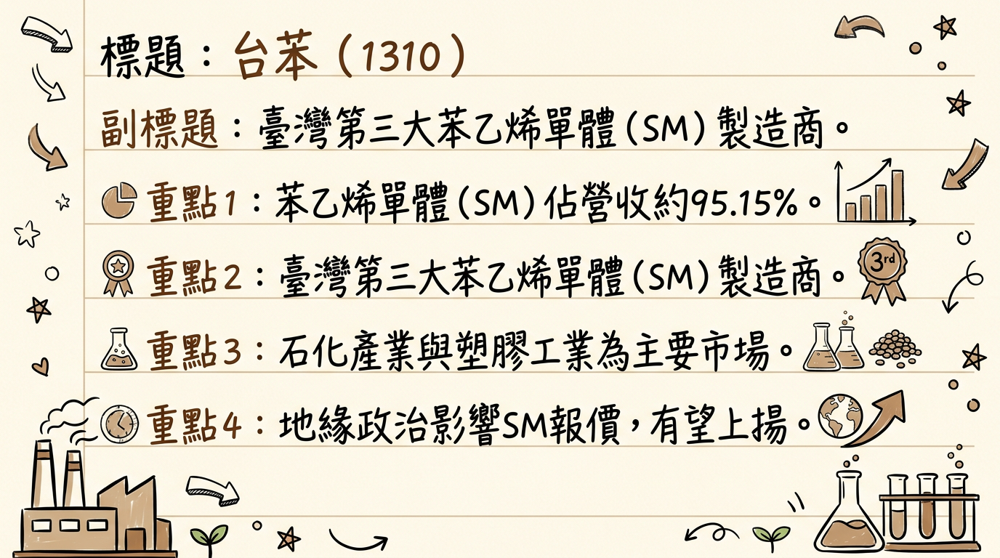
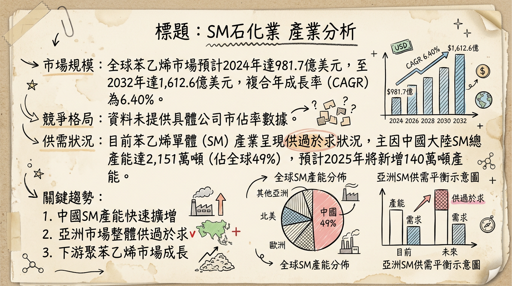
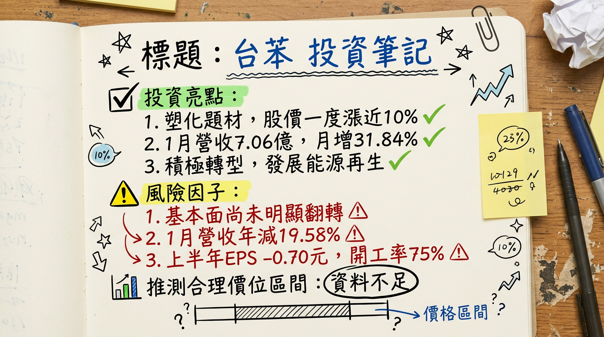

1310 台苯 深度研究報告
一句話摘要
台苯 (1310) 身處嚴重供過於求的苯乙烯單體 (SM) 石化產業，近年營運持續虧損，2025年前三季每股虧損已達 -0.94元。儘管公司積極尋求轉型至再生能源與能源貿易等新事業，但面臨中國大陸SM新增產能的巨大壓力 (預計2026年將再釋出 223萬噸 新產能) 與全球疲軟的下游需求，短期內本業營運挑戰仍鉅，長期成長動能仰賴轉型進展。
公司概覽
台苯 (1310) 主要經營苯乙烯單體 (Styrene Monomer, SM) 製造與銷售，為臺灣第三大SM供應商。此外，亦生產特用化學品對二乙苯 (PDEB) 及甲苯乙苯。公司積極規劃跨足材料、投資開發及旅遊等多元事業，以應對石化本業困境。主要生產據點位於臺灣中南部的台塑六輕工業區和大甲地區。
營收結構 (2024年資料)
| 產品線 | 佔營業比重 |
|---|
| 苯乙烯單體 (SM) | 95.15% |
| 對二乙苯 (PDEB) | 1.80% |
| 其他營運事業部 | 3.05% |
核心競爭優勢
市場領導地位與國內客戶基礎： 台苯為臺灣第三大SM製造商，在國內市場擁有穩固的客戶群，主要供應給國內聚苯乙烯 (PS)、ABS樹脂及合成橡膠 (SBR) 製造商，終端產品應用廣泛於家電、汽車零組件、電子產品外殼及包裝材料。
特用化學品利基： 特用化學品對二乙苯 (PDEB) 外銷至全球 18個 地區，展現其在特定領域的國際競爭力與差異化能力。
積極轉型策略： 面對本業逆境，公司明確宣示朝向資源回收、再生能源或能源貿易等新事業體轉型，並已制定2025年減碳 10%、2030年減碳 30%、2050年淨零排放的明確目標，為未來可持續發展奠定基礎。
集團資源與官股支撐： 身為集團公司，台苯擁有相對較強的資源調度能力。此外，官股銀行約 一成 的持股比率，在股價長期低於淨值時能提供一定的支撐。
財務分析
月營收趨勢
台苯近六個月月營收表現如下：
| 月份 | 金額 (億元) | 月增率 (MoM) | 年增率 (YoY) |
|---|
| 22026年1月 | 7.06 | +31.84% | -19.58% |
| 2025年12月 | 5.35 | -7.70% | -46.33% |
| 2025年11月 | 5.80 | -2.63% | -39.80% |
| 2025年10月 | 5.96 | -17.61% | -22.65% |
| 2025年9月 | 7.23 | +0.85% | -24.81% |
| 2025年8月 | 7.17 | -8.37% | -30.93% |
- 分析： 2026年1月營收回升至 7.06億元，創近4個月新高，月增率達 31.84%。然而，年增率仍為 -19.58%，顯示相較去年同期營運仍有顯著下滑，整體營收表現仍未擺脫低迷。
季度數據 (最新公告至 2025年第三季)
| 項目 | 2025年上半年 | 2025年第三季 | 2025年累積至第三季 |
|---|
| 合併營收 | 47.4億元 | (未單獨公告) | 約69.62億元 |
| 營業毛利 | -2.99億元 | (未單獨公告) | -4.24億元 |
| 毛利率 | -6.00% | -5.98% | -6.10% |
| 營業淨利 | -3.83億元 | (未單獨公告) | -5.30億元 |
| 營業利益率 | -8.00% | -7.36% (由淨利潤趨勢推估) | -7.60% (由淨利潤趨勢推估) |
| 每股盈餘 (EPS) | -0.70元 | -0.24元 | -0.94元 |
- 分析： 公司在2025年上半年合併營收為 47.4億元，稅後淨損 3.72億元，每股虧損 -0.70元，虧損幅度較去年同期擴大。2025年第三季單季EPS為 -0.24元，累計至第三季EPS已達 -0.94元，顯示本業持續面臨嚴峻虧損。毛利率連續多季呈現負值，反映SM產業景氣低迷，產品報價與成本嚴重倒掛。
年度趨勢
| 項目 | 2024年實際 | 2025年實際 (累計至12月營收/Q3 EPS) | 2026年預估 |
|---|
| 全年度營收 | 114.23億元 | 86.73億元 | 未提供 |
| 全年度EPS | -0.72元 | -0.94元 (累計至Q3) | 未提供 |
- 分析： 2024年全年營收 114.23億元，EPS為 -0.72元。2025年營收與獲利持續惡化，累積至第三季EPS已超越2024年全年虧損。市場目前並未見到明確的2025年全年EPS或2026年營收/EPS預估數字，顯示對其營運展望的低能見度。
法說會重點 (2025年09月25日)
- 市場展望： 總經理仲崇國指出，2025年SM產業受關稅戰、中國大陸產能過剩及下游需求疲軟等多重因素影響，壓縮廠商獲利，全球供應鏈受衝擊，導致終端需求萎縮。
- 下半年展望： 2025年下半年市況依舊充滿挑戰，傳統第三季「旺季不旺」將延續至第四季，未見好轉跡象。
- 產能供過於求： 預計2025年下半年中國大陸將再釋出 180萬噸 SM新產能，2026年更將有額外 223萬噸 產能投入市場，加劇全球SM市場供過於求問題。日本、韓國及臺灣的SM廠預期將進行常態性減產。
- 營運策略： 公司現階段營運重點在於降低本業虧損，透過減少固定資產支出及彈性調整銷售策略應對市場變局。
- 轉型發展： 台苯積極尋求新事業體轉型，未來可能朝向資源回收、能源再生或能源貿易等新領域發展，但新產品仍處於保密階段。
- 開工率： 2025年上半年SM廠平均開工率降至約 75%。
券商觀點
目前未能找到2025-2026年針對台苯 (1310) 的具體券商目標價報告或EPS預估數字。市場對其營運轉型與獲利表現持觀望態度。
財報深度分析
利潤率趨勢 (近八季合併利潤率)
| 季度 | 毛利率 | 營業利益率 | 稅後淨利率 |
|---|
| 2025Q3 | -5.28% | -7.36% | -5.64% |
| 2025Q2 | -5.36% | -7.14% | -7.91% |
| 2025Q1 | -7.31% | -9.08% | -7.77% |
| 2024Q4 | -5.41% | -7.25% | -6.46% |
| 2024Q3 | -5.08% | -6.63% | -5.79% |
| 2024Q2 | -0.77% | -2.19% | 0.07% |
| 2024Q1 | -0.93% | -3.51% | -1.52% |
| 2023Q4 | -6.21% | -8.45% | -6.21% |
- 分析： 台苯自2023年以來利潤率持續在低檔徘徊，2025年各季毛利率、營業利益率及稅後淨利率均呈現負值，且在2025Q1達到谷底。這主要歸因於：
*
中國SM產能過剩： 中國大陸SM總產能達
2,151萬噸 (2025上半年)，佔全球
49%，造成市場嚴重供過於求，產品報價承壓。
* 油價波動與高價庫存： OPEC+增產壓抑油價，導致石化產品價格走跌，台苯面臨高價庫存的跌價損失，加劇毛損。
* 貿易壁壘與需求疲軟： 全球關稅戰與下游需求萎縮，壓縮廠商獲利空間，同時歐盟對臺灣ABS課徵臨時反傾銷稅，影響出口銷量。
存貨分析與營運效率
| 季度 | 存貨週轉天數 (天) | 應收帳款週轉天數 (天) |
|---|
| 2025Q3 | 12.39 | 30.00 |
| 2025Q2 | 15.24 | 27.39 |
| 2025Q1 | 18.18 | 34.28 |
| 2024Q4 | 13.52 | 32.88 |
| 2024Q3 | 15.39 | 32.94 |
| 2024Q2 | 14.41 | 24.39 |
| 2024Q1 | 23.18 | 29.14 |
| 2023Q4 | 22.07 | 28.12 |
- 存貨分析： 存貨週轉天數在2024年Q1曾達 23.18天 高點，2025Q1回升至 18.18天 後，在2025Q2、Q3有所下降。2025Q2存貨季成長率為 -37.6%，2025Q3為 -8.15%，顯示公司已積極去化庫存。然而，法說會提及「高價庫存也加劇SM生產毛損」，反映存貨去化雖然有進展，但仍面臨價值減損的問題。
- 應收帳款： 應收帳款週轉天數在近八季呈波動，2025Q1達 34.28天 後，Q2、Q3略有下降，整體營運收款效率尚可維持。
資本支出
- 近3年趨勢： 目前未有台苯2024-2026年具體的資本支出金額數據。然而，法說會中管理層明確指出，現階段營運重點為降低虧損，因此策略之一是「減少固定資產支出」。從固定資產季成長率來看，2024年至2025年各季度均呈現負成長，例如2025Q3為 -2.01%，反映投資放緩。
- 未來計畫： 公司正積極尋求轉型至再生能源或能源貿易等新領域，新產品細節保密。對於SM本業，在供過於求的市場環境下，並無新增產能計畫。
- 折舊攤銷： 2025年Q2折舊為 68,019千元，攤銷為 309千元。折舊性固定資產成長率為負值，反映固定資產投資的減少。
股權異動
- 董監事/大股東申報轉讓： 截至2026年1月，未找到2024年之後的董監事、經理人及大股東申報轉讓紀錄。最近一次紀錄為2008年。
- 庫藏股買回： 未找到2024-2026年的庫藏股買回紀錄。
- 可轉換公司債 (CB)： 未找到2024-2026年發行可轉換公司債的相關資訊。
- 現金增資或減資： 未找到2024-2026年現金增資或減資計畫的相關資訊。
- 股利政策： 台苯於2023年3月8日公告發放現金股利 0.2元。2024年股利為 0.0元。公司自2023年起已停止發放股利，對股東權益造成負面影響。
- 其他： 2025年Q3負債比率為 26.88%，整體趨於穩定。但2025年Q2流動比率已跌破100%至 97.9%，顯示流動性壓力日益嚴峻。
產業分析
市場規模與供需
- 全球市場規模： 全球苯乙烯市場預計在2025年達到 643.74億美元，並以 5.57% 的複合年成長率 (CAGR) 增長。另有報告預計2024年市場規模為 981.7億美元，到2032年將達 1,612.6億美元，CAGR為 6.40%。下游聚苯乙烯市場預計從2025年的 546.4億美元 成長至2026年的 602.3億美元，CAGR達 10.2%。
- 供需狀況： 目前苯乙烯單體 (SM) 產業呈現嚴重供過於求。截至2025年上半年，中國大陸SM總產能達 2,151萬噸，佔全球產能的 49%。預計2025年將新增 140萬噸 產能，2026年再增加 223萬噸，將進一步加劇供過於求壓力，迫使臺灣、日本、韓國的SM廠進行常態性減產。
競爭格局
全球苯乙烯主要生產企業市佔率 (2022年)
| 排名 | 公司名稱 | 苯乙烯總產能市佔率 |
|---|
| 1 | 中國石化 | 9.8% |
| 2 | 殼牌 | 未提供 |
| 3 | 英力士 | 未提供 |
*
產能： 台苯乙苯年產能
38萬噸，為臺灣第三大SM廠。相較之下，中國石化在2024年苯乙烯總產能已達
2,273.5萬噸，產能規模差異巨大。
* 技術與客戶： 台苯SM產品以國內銷售為主，主要客戶為國內PS、ABS、SBR製造商。PDEB則外銷至全球 18個 地區。儘管缺乏與國際巨頭的直接技術與定價比較，台苯在特定產品和國內市場仍有其競爭優勢。
- 臺灣同業比較： 由於缺乏臺灣其他SM同業 (如台達化、國喬等) 在2024-2026年的具體營收規模、毛利率與EPS的最新公開比較數據，難以進行精確量化對比。然而，台苯2025年上半年營業毛利率為 -6%、每股虧損 -0.70元 的表現，反映其與整體產業面臨的困境。
產業趨勢與對台苯的影響
關鍵技術趨勢：
* 循環經濟與永續發展： 全球石化產業面臨減塑與淨零排放壓力，加速朝向低碳化、循環化轉型。
* 影響： 企業優先開發再生EPS樹脂、化學回收技術、生物基原料等永續解決方案。台苯已設定2025年減碳 10%、2030年減碳 30%、2050年淨零排放目標，並透過建置太陽能發電、廢熱回收、燃料改用天然氣等措施應對。
* 高值化與差異化產品發展： 面對產能過剩，產業尋求透過開發高性能聚合物、新材料來提升產品附加價值。
* 影響： 苯乙烯下游產品可共聚形成獨特性能的新材料。台苯積極尋求新事業體轉型，預計朝資源回收、能源再生等高值化方向發展。
對台苯的機會與威脅：
* 機會：
* 轉型新事業體： 積極發展資源回收、再生能源或能源貿易，有望突破本業困境。
* 高值化與低碳化布局： 減碳目標與實際行動，有助於提升長期競爭力與市場認可。
* 集團資源優勢： 轉型過程可望獲得集團資源支持。
* 威脅：
* 中國大陸產能過剩： 持續擴增的SM產能嚴重壓縮產品報價與獲利空間，預計2026年仍有大量新產能投放。
* 貿易壁壘與關稅戰： 美國關稅政策、歐盟反傾銷稅削弱臺灣產品競爭力，抑制終端需求。
* 下游需求疲軟： 中國下游ABS、PS、EPS產能過剩與競爭，影響對SM原料的拉貨動能。
* 油價波動： 油價走跌導致石化產品價格下跌，加劇高價庫存跌價損失。
相關投資題材連結：
* 電動車 (EV)： 聚苯乙烯因輕質、耐熱等特性應用於電動車系統組件。IEA預計2024年全球電動車銷量達 1,700萬輛，年增 25%。
* 電子設備與消費性電子產品： 聚苯乙烯作為電子設備機殼、家電、汽車零組件的基礎材料，將間接受益於電子產業的整體發展。
* 包裝產業： 苯乙烯主要用於生產聚苯乙烯塑膠，因多功能性、輕量、良好絕緣性，廣泛應用於醫藥、食品飲料、化妝品包裝。
近期催化劑
利多事件：
- 2026年03月06日： 受中東供給風險推升塑化報價題材，台苯股價盤中一度上漲近一成。此為短線資金避險與題材性操作。
- 2026年02月09日： 公告2026年1月合併營收為 7.06億元，創近4個月新高，月增 31.84%，顯示營收有觸底反彈跡象，但年減 19.58% 仍需關注。
- 官股銀行買超： 官股銀行連日買超，持股比率約 一成，對股價形成一定支撐。
- 積極轉型： 公司明確提出轉型至再生能源與能源貿易等新事業體，為長期發展注入潛在動能。
利空事件：
- 持續虧損： 2025年前三季每股虧損達 -0.94元，本業營運仍深陷困境，基本面尚未翻轉。
- 中國產能過剩： 2025年下半年中國將再釋出 180萬噸 SM新產能，2026年將有額外 223萬噸 投入，持續加劇全球SM市場供過於求。
- 下游需求疲軟： 關稅戰、貿易壁壘與終端需求萎縮，導致傳統旺季不旺，第四季展望亦無好轉。
- 無股利政策： 公司自2023年起停止發放股利，影響股東權益。
外資/投信近期買賣超張數 (2026年1月至今)
| 日期 | 外資買賣超 (張) | 投信買賣超 (張) | 自營商買賣超 (張) | 合計買賣超 (張) |
|---|
| 2026年03月06日 | +355 | 0 | 未提供 | +355 |
| 2026年03月05日 | -436 | 0 | -16 | -452 |
| 2026年03月04日 | -8,515 | 0 | -15 | -8,530 |
| 2026年03月03日 | +1,348 | 0 | +2 | +1,350 |
| 2026年03月02日 | -1,932 | 0 | -2 | -1,934 |
| 2026年02月25日 | +2,127 | 0 | -11 | +2,116 |
- 分析： 投信在2026年1月至今未有顯著交易。外資在3月初呈現大額賣超，但在2月下旬至3月初仍有部分買超紀錄，顯示法人對其操作策略偏向短線進出。
⭐ 成長動能時間軸
| 成長動能 | 具體進展/時間 | 影響程度 |
|---|
| 擴廠計畫 | 無明確擴廠計畫。公司策略為「減少固定資本支出」以應對虧損。 | 負面 (顯示產業低迷) |
| 新客戶/新市場 | 積極尋求轉型至再生能源或能源貿易等新領域 (2025年下半年起)。新產品細節保密，尚未公布具體客戶或市場。 | 潛在正面，但短期貢獻不明 |
| 產能 | 現有SM年產能 35萬噸，PDEB年產能 7,000噸。2025上半年SM廠平均開工率降至約 75%。無規劃產能擴充。 | 負面 (因應市場萎縮) |
| 資本支出 | 公司策略為「減少固定資本支出」來降低虧損。無資本支出增加計畫。 | 負面 (顯示營運保守) |
| 需求 | 下游SM應用於家電、汽車、電子、包裝材料等。但受全球關稅戰、中國大陸產能過剩及下游需求疲軟影響，市場需求萎縮。 | 負面 (短期難見好轉) |
2026 展望
成長動能
- 新事業轉型： 台苯積極規劃轉型至資源回收、再生能源及能源貿易等新領域，若能有具體產品、技術突破與市場驗證，將是2026年及之後的重要成長契機。公司已設定明確的減碳目標，此永續發展策略有助於中長期競爭力。
- 低價股與官股支撐： 股價長期在淨值下方盤整，在市場地緣政治風險升溫時，可能吸引短線資金關注，且有官股銀行約一成持股比率提供底部支撐。
風險
- SM產業供過於求持續惡化： 2026年中國大陸預計將再釋出 223萬噸 SM新產能，全球供需失衡問題將更加嚴峻，嚴重壓縮台苯SM本業的獲利空間，恐持續面臨常態性減產壓力。
- 下游需求疲軟： 全球經濟不確定性、貿易壁壘及中國大陸自身下游產業 (如ABS、PS) 產能過剩，將持續影響對SM原料的需求，導致利差難以擴大。
- 轉型時程與成效不確定性： 儘管積極轉型，但新事業體產品細節仍在保密階段，具體投產時程、市場接受度及對營收獲利的貢獻仍充滿不確定性，短期內難以彌補本業虧損。
- 油價及地緣政治波動： 油價走勢對石化產業影響甚鉅，任何油價下跌或維持低檔，都將導致高價庫存跌價損失。中東地緣政治雖可能短期推升報價，但長期不確定性仍高。
- 流動性壓力： 2025年Q2流動比率已跌破 97.9%，顯示公司存在潛在的流動性壓力，需審慎管理現金流。
投資結論
綜合以上深度分析，台苯 (1310) 在2026年仍將面臨極具挑戰的經營環境。其SM本業受制於全球尤其中國大陸嚴重的供過於求問題，產品利潤空間持續被壓縮，導致公司持續虧損。儘管公司管理層積極推動新事業轉型，並設有明確的永續發展目標，但這些潛在的成長動能尚未有具體進展或量化時程，短期內難以見到顯著貢獻。
本業營運壓力巨大，短期獲利不易： SM產業結構性供過於求在2026年將持續惡化，預期公司本業仍將承壓，虧損可能延續。投資人應審慎評估此一核心風險。
轉型為長期關鍵，但具不確定性： 公司轉型再生能源與能源貿易的策略方向正確，但目前新產品開發仍在保密階段，缺乏具體藍圖與量化目標。其成敗將決定台苯的長期生存與發展，建議投資人密切關注法說會與公司公告的轉型進展。
財務狀況仍需嚴控： 公司已透過降低開工率、減少資本支出來控制虧損，但流動比率已跌破100%，顯示財務彈性有限。如何優化資金運用與成本控制將是關鍵。
地緣政治為短線題材，非長期基本面： 近期股價受中東地緣政治風險推升塑化報價而波動，僅為題材性買盤。除非國際原物料市場供需結構出現根本性改變，否則難以支撐長期基本面好轉。
投資建議： 考量台苯目前本業持續虧損、轉型成果未明，且面臨產業結構性逆風，投資台苯的風險性偏高。現階段適合觀望或僅為高度投機性質的資金。若公司能明確揭露新事業體的具體營收貢獻時程與獲利模式，並展現持續改善本業虧損的能力，方能重新評估其投資價值。
建議目標價區間：
基於目前本業的嚴峻虧損狀況，且缺乏具體轉型成果及券商預估，我們建議投資人對台苯維持審慎觀望。若未來公司轉型策略能取得具體、可量化的進展，並能有效止血本業虧損，其股價潛在的投機性反彈區間可觀察在每股新台幣 10.5 元至 12.0 元之間。此區間反映的是市場對其未來轉型成功的潛在預期，但現階段仍屬高度風險投資。
本報告由 AI 自動產生，資料來源為公開網路資訊，僅供參考，不構成投資建議。產生時間：2026-03-08 18:12
📊 資訊卡


